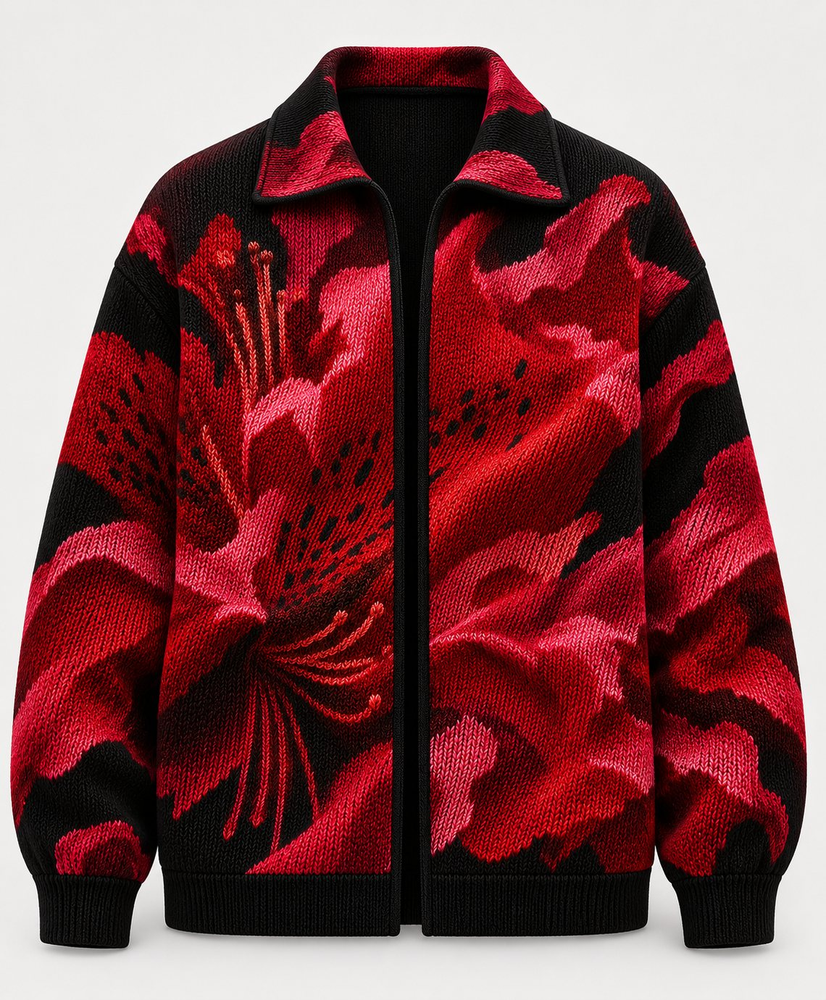
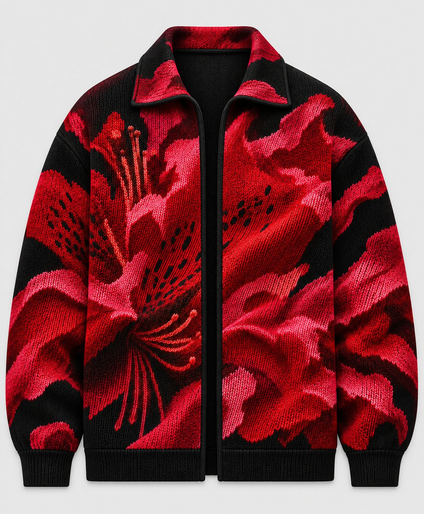
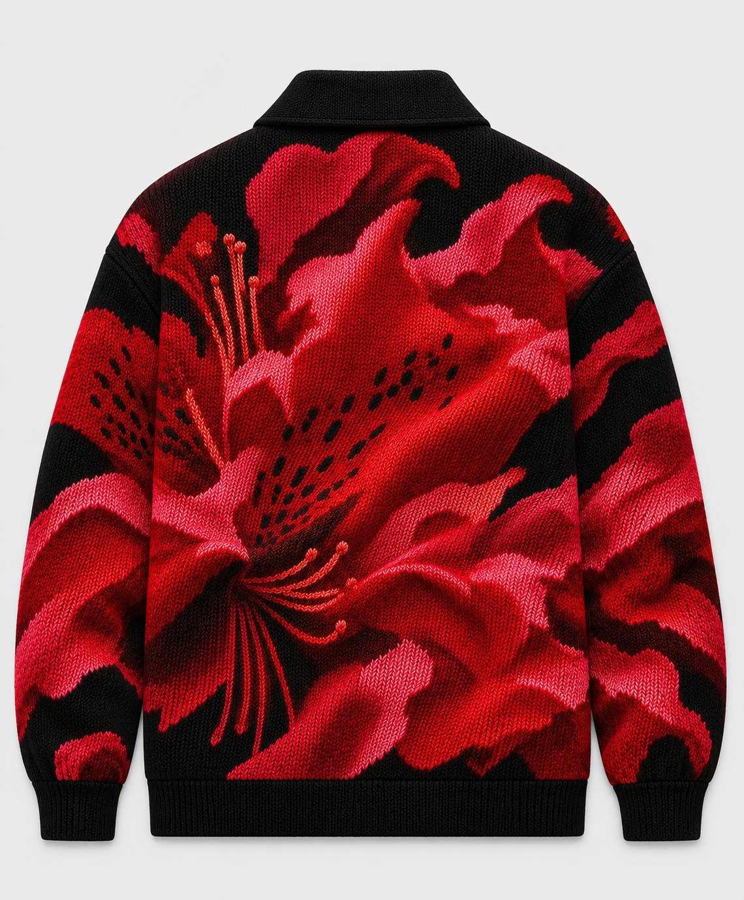
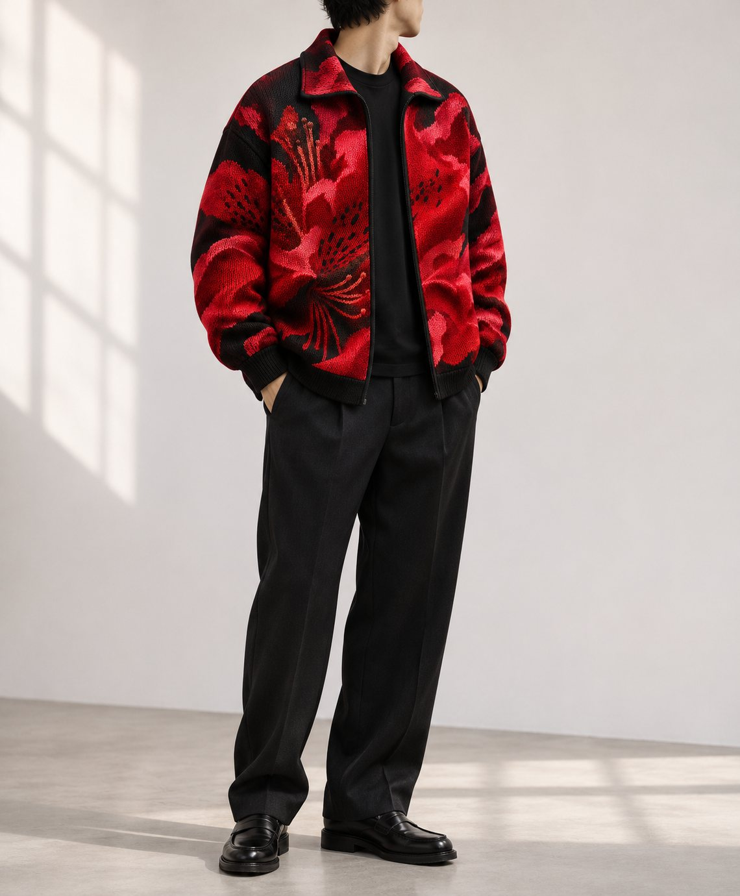
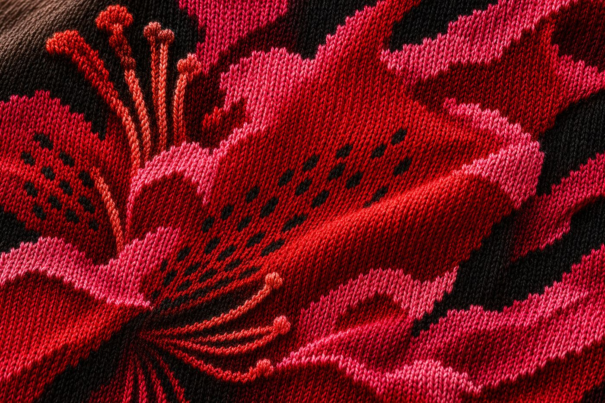
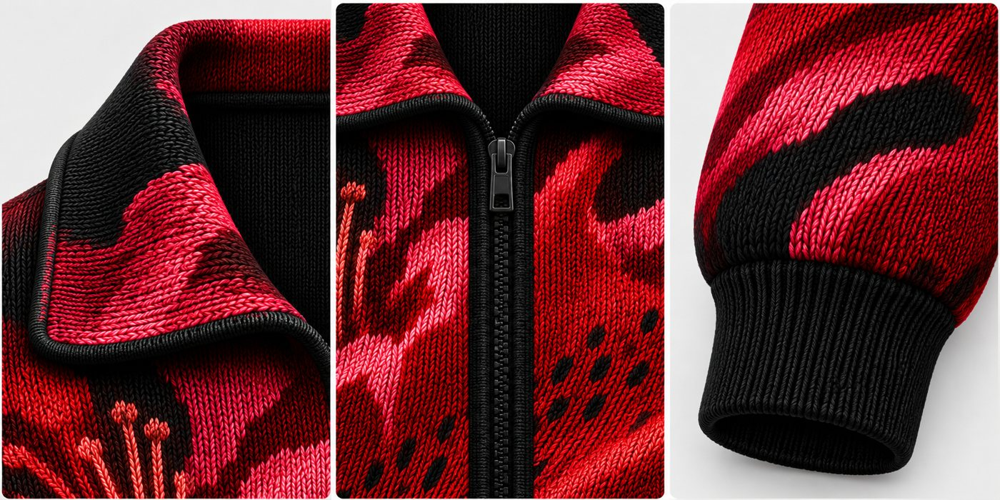
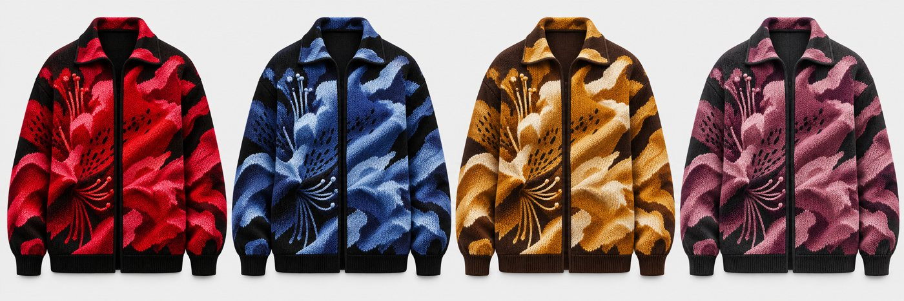

Design Brief
Flower Knit Jacket
Design brief, style and mood · 2026-11-28
A zip jacket in a flower knit jacquard: one large red flower across front, back and sleeves on a black ground. Bold, soft and easy to wear. The brief sets the look and mood through seven views, from hero and flats to the stitch detail, trims and colorways; yarn, gauge and construction are left to product development.


(01) Hero: front view, open, studio.

(02) Front flat: open zip front, collar, rib cuffs and hem.

(03) Back flat: the flower continues across back and sleeves.

(04) On body: worn open over black, daylit studio.

(05) Jacquard macro: stitch-level flower in four reds and black.

(06) Trims: collar edge, zip front and rib cuff.

(07) Colorways: the original and three alternates.Overview
A zip jacket in a flower knit jacquard: one large red flower fills the front, back and sleeves against a black ground, finished with a knit collar and black rib cuffs and hem. The motif began as a rhododendron photograph and was translated into knit stitches. (01, 02, 03)
Mood
Bold, saturated and quiet at once: a dramatic flower worn like a plain jacket. Close to a garden at dusk; handmade in feeling, soft to the eye, easy to wear over black. (04)
Style direction
- Motif
- one oversized flower, cropped and continued across the seams, not a repeat of small blooms.
- Ground
- black carries the shape; the flower carries the color.
- Trims
- plain and dark, so the jacquard stays the only pattern.
- Balance
- about two thirds flower, one third black.
Color and finish
Read from the images, not measured or matched to a color standard.
| Part | Color | Finish |
|---|---|---|
| Flower | Crimson, scarlet, coral pink | Soft knit jacquard, stitch steps visible |
| Ground | Black | Same knit, matte |
| Collar, cuffs, hem | Black, flower tones at the collar | Fine rib, firm edge |
Material and detail
A mid-weight knit with the flower worked in with the stitch, soft and slightly full. The details to judge are the stepped petal edges, the collar where the flower meets the black binding, and the rib cuff against the sleeve. (05, 06)
Use and context
An easy outer layer for cool days: open over a plain tee, or zipped as the one bright piece in a dark outfit. (04)
Shape and fit
Relaxed, straight and slightly boxy, with a dropped shoulder, a flat collar and a rib hem that sits at the hip. The flower runs across the seams so the front and back read as one picture. (02, 03)
Closure and trims
A full-length dark zip at the center front, a knit collar with a narrow black binding, and plain rib cuffs and hem. No pockets are fixed in this brief. (06)
Placement and scale
The flower is placed once, large, with the center of the bloom on the left chest and petals wrapping the sleeves and back. Scale and matching at the seams are for product development. (02, 03, 05)
Colorways
The original red on black and three alternates that keep one large flower on a dark ground: indigo and pale blue, ochre and cream on brown, dusty pink and plum on charcoal. (07)
Open to product development
- Gauge, yarn and fiber; jacquard method and number of colors.
- Pattern matching at seams, and the fit and size range.
- Zip type, collar construction, pockets, rib specification.
- Colorway range and cost.
The brief fixes the look and mood; every detail above can change.
Credits and rights
AI-generated product looks made for this brief from the designer's own look image (image model); looks, not a construction. The flower motif is drawn from the designer's own photograph.